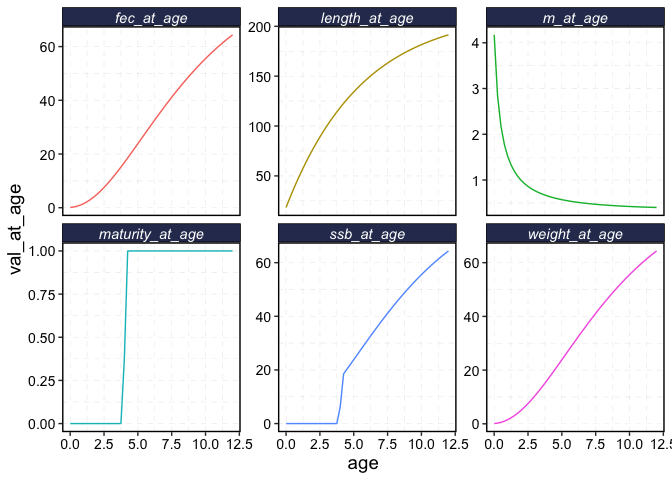
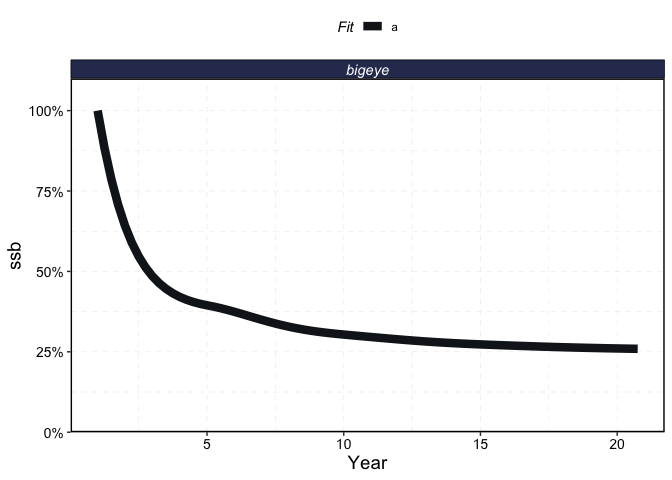
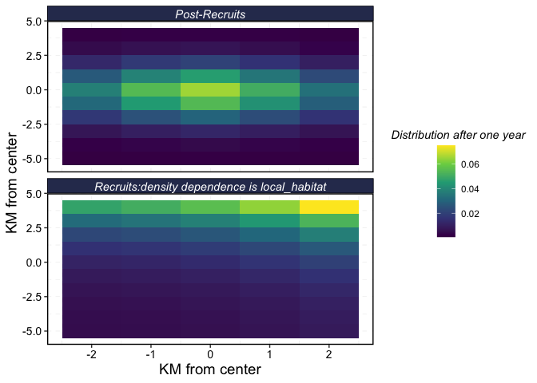
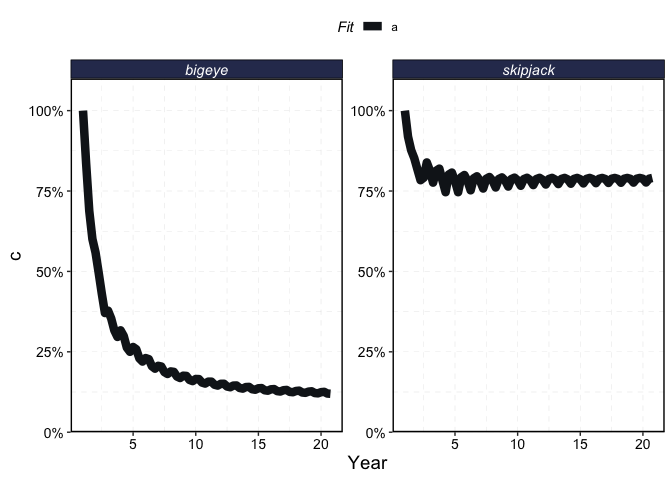
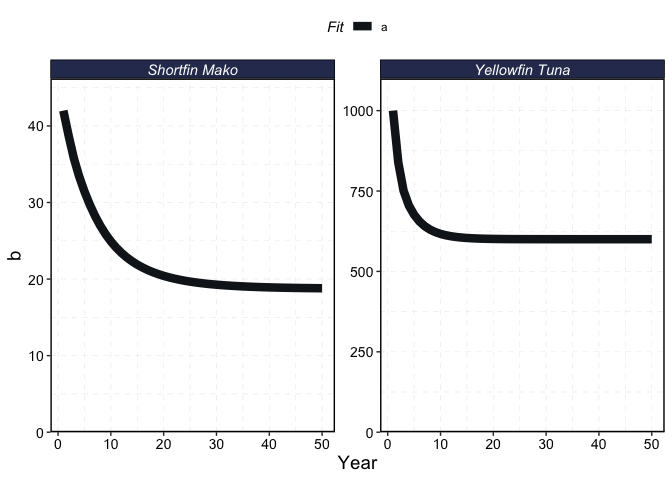
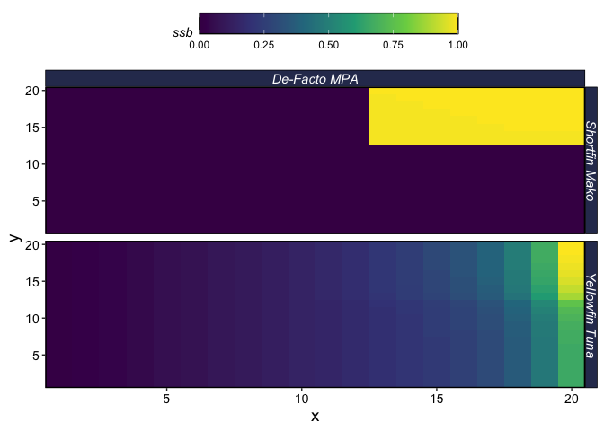

This package is back under active construction and so many of the vignettes are still works-in-progress at this time.
marlin is a package for efficiently running simulations of marine fauna and fisheries. It can track the age-structured populations of multiple independent animals targeted by multiple fishing fleets across a two dimensional space. It allows users to simulate a wide range of life histories, movement dynamics, fishing fleet behaviors, and management strategies. See examples below and vignettes under the articles tab for how to use marlin to do things like simulate… - the impacts of displaced fishing effort across multiple species - seasonal spawning aggregations or climate induced range shifts - the impacts of port distance in fleet dynamics - Data-generating processes for spatial-stock assessment
The model is described in the following references
Ovando, Daniel, Darcy Bradley, Echelle Burns, Lennon Thomas, and James Thorson. “Simulating Benefits, Costs and Trade-Offs of Spatial Management in Marine Social-Ecological Systems.” Fish and Fisheries, (2023). https://doi.org/10.1111/faf.12804.
Ovando, Daniel. “Predicted Effects of Marine Protected Areas on Conservation and Catches Are Sensitive to Model Structure.” Theoretical Ecology 18, no. 1 (2025): 7. https://doi.org/10.1007/s12080-024-00602-7.
What is marlin for?
marlin is best suited for asking what if rather that what will questions.
In other words, marlin is better suited to asking “how might the impacts of my proposed MPA network change if fishing effort is displaced rather than removed?” rather than “what will the impacts of my proposed MPA network be on biodiversity down to the 6th decimal place”.
This is because marlin is a structural rather than statistical simulation model, meaning the parameters in the model cannot be directly fit to explain patterns in observed data. Rather, users must manually adjust the parameters of the model to reflect the general dynamics of the system they are interested in.
This means that “how much of an impact does hyperallometry have on MPA outcomes” is a much simpler question than “what will be the catch and biodiversity impacts of the MPA I am designing for 17 different data-limited species in a rapidly changing small bay”.
Both are doable, and marlin can provide general insights in both cases, but the more specific and what will style of question you ask, the harder it will be to ensure the model is appropriately set up.
Some use cases we envision for marlin are
Assessing sensitivity of MPA network designs to key ecological and economic unknowns
Design of dynamic ocean management strategies under climate change
Management strategy evaluation of spatially-explicit fisheries management
Installation
You can install the development version from GitHub using:
# install.packages("devtools")
devtools::install_github("DanOvando/marlin")Installation Troubleshooting
Make sure you try the install with a fresh R session (go to “Session>Restart R” to make sure)
You need a version of R >= 4.0.
If you run into an error, first off try updating your R packages. From there….
In order to install and run marlin you need to have R compiler tools correctly set up.
To do this…
- On Windows, make sure you have the appropriate version of Rtools installed (here), most likely Rtools4X if you have R version 4.X
- Make sure that you select the box that says something about adding Rtools to the PATH variable if prompted
- On macOS I recommend either using the unofficial macrtools package, or if you prefer you can follow the official instructions on CRAN here.
Once you’ve got your R compiler tools installed correctly, close down then re-open R and then try installing marlin again.
A Caveat
marlin is designed to be fast and relatively user friendly, at least for the complexity of the modeling it enables users to do. However, it is not a tool for fully automated MPA design; users will still need to be able to understand the core functionality of the model, and mileage with marliin will depend greatly on the creativity and R skills of the user.
In particular, while we provide some wrappers for organizing common outputs and plots, marlin produces far more outputs, and is designed for more use cases, than we can preemptively plan for.
Given that marlin tracks populations and fleet dynamics across ages, time steps, space, species, and fleet units, the outputs are rather unruly. Skills in wrangling list objects will serve you will, along with tidy-data manipulation. purrr is really really good at this.
You do not need the tidyverse to run marlin, but you will see that we make extensive use of it, in particular dplyr, tidyr, ggplot2 and purrr in the examples below, to extract useful results from marlin.
Simple Example
Let’s start with a simple one-fleet one-critter example to illustrate the various options in marlin.
Some of the core options for marlin
resolution: the number of patches to each a side of the 2D grid. Setting one number creates and X by X matrix( e.g. resolution = 10 creates a 10x10 simulation grid). Alternatively you can specify a vector of length two showing the number of dimensions in the X and Y dimension. So,resolution = c(2,10)creates a 2 x 10 simulation grid.years: the number of years to run the simulationseasons: the number of seasons per year. 2 would mean that each year is divided into two time steps, 4 would mean a quarterly model, 12 a monthly model, etc.patch_area: the area (assumed to be KM2) of each patch
library(marlin)
library(tidyverse)
options(dplyr.summarise.inform = FALSE)
theme_set(marlin::theme_marlin(base_size = 42))
resolution <- c(5, 10)
patch_area <- 2
years <- 20
seasons <- 4
time_step <- 1 / seasons
steps <- years * seasonsFrom there, marlin works be specifying three list objects
fauna: a list object of the life histories of the different species being simulatedfleets: a list object of the fleet dynamics to be simulatedmanager: a list of the management strategies being employed
A Warning about Default Life History Values
The fauna object is a list with individual slots for every “critter” you want to simulate, created by the create_critter function. If you supply a common or scientific name, the model will try and populate the life history values for your species based on the values reported in FishLife. Note that you NEED an internet connection for this feature to work. Running marlin offline requires you to supply all life history values on your own.
WARNING. The values from FishLife are model estimates. You should always check the results to see if they are good enough for your application, and where possible / needed update the values with more precise local studies.
When you use FishLife to look up your life history values the objecting resulting from create_critter will have an entry called closest_taxa_match. This is the taxonomic level that FishLife ended up using given the scientific or common name supplied to it. You should double check that the result is as close to the species you wanted as possible!
We recommend using scientific_name rather than common_name. If you tried to look up by common_name and get an error that says Error in seq.default(min_age, max_age, by = time_step)... it’s most likely a database connection problem and simply running the code again will work.
Creating a basic simulation
We’ll create a basic simulation showing how to fill in some of the core options, starting with a simulated fish using the create_critter function.
Much of this is simply passing the parameters of the system. However, the create_critter functiona also allows you to supply a wide range of species-specific parameters.
in this case, we have specified adult_home_range and recruit_home_range. These are the linear distances (in KM) that 95% of animals would travel from a source patch over th course of a year.
fauna <-
list(
"bigeye" = create_critter(
common_name = "bigeye tuna",
adult_home_range = 5,
recruit_home_range = 15,
density_dependence = "local_habitat",
seasons = seasons,
depletion = .25,
resolution = resolution,
patch_area = patch_area,
steepness = 0.6,
ssb0 = 42,
m = 0.4
)
)
fauna$bigeye$plot()
fauna$bigeye$plot_movement()
The fleets object is a list of individual fishing fleets created by the create_fleet function. Importantly, each fleet is broken up into metiers specifying the dynamics of a fishing fleet with regards to a matching critter in the fauna object. So, in this case we have a longline fleet, with a metier for bigeye tuna specifying things like the price per unit weight, selectivity, and p_explt. p_explt tracks the relative exploitation of each metier in the total exploitation of each species. So, if one metier has a p_explt of 1 for species X, and another a p_explt of 2 for the same species, 50% of the mortality for species X comes from the first metier (p_explt values are relative, not absolute).
fleets <- list(
"longline" = create_fleet(
list("bigeye" = Metier$new(
critter = fauna$bigeye,
price = 10,
sel_form = "logistic",
sel_start = 1,
sel_delta = .01,
catchability = 0,
p_explt = 1,
)),
base_effort = prod(resolution),
resolution = resolution
)
)
fleets$longline$metiers$bigeye$plot_selectivity()
We then use the tune_fleets function as needed to tune the dynamics of the fleet to achieve specific objectives. In this case, we specified a target equilibrium fished depletion of 25% (meaning biomass at equilibrium is 25% of unfished biomass). tune_fleets adjusts the catchability coefficients by fleet to achieve the desired depletion level, taking into account the dynamics and p_explt values per metier.
fleets <- tune_fleets(fauna, fleets, tune_type = "depletion")
fleets$longline$metiers$bigeye$plot_catchability()
From there, we run the simulation by passing the fauna and fleet options to the simmar function
start_time <- Sys.time()
example_sim <- simmar(
fauna = fauna,
fleets = fleets,
years = years
)
Sys.time() - start_time
#> Time difference of 0.1283531 secswe can then use process_marlin and plot_marlin to examine the simulation
processed_marlin <- process_marlin(sim = example_sim, time_step = time_step)
plot_marlin(processed_marlin)
plot_marlin(processed_marlin, plot_var = "c", max_scale = FALSE)
plot_marlin(processed_marlin, plot_var = "n", plot_type = "length", fauna = fauna)
plot_marlin(processed_marlin, plot_var = "ssb", plot_type = "space", steps_to_plot = max(processed_marlin$fauna$step))Two Species and two fleets with bells and whistles
Now, let’s make this a two species and two fleet example with some seasonal dynamics, where the species have different habitats in different seasons.
seasons <- 4
steps <- years * seasons
time_step <- 1 / seasons
skipjack_home_range <- 2
bigeye_home_range <- 5
# for now make up some habitat
skipjack_habitat <- expand_grid(x = 1:resolution[1], y = 1:resolution[2]) %>%
dplyr::mutate(
habitat = dnorm((x^2 + y^2), 20, 200),
habitat = habitat / max(habitat) * skipjack_home_range
) |>
pivot_wider(names_from = x, values_from = habitat) %>%
select(-y) %>%
as.matrix()
bigeye_habitat <- expand_grid(x = 1:resolution[1], y = 1:resolution[2]) %>%
mutate(
habitat = dnorm((x^2 + y^2), 300, 100),
habitat = habitat / max(habitat) * bigeye_home_range
) %>%
pivot_wider(names_from = x, values_from = habitat) %>%
select(-y) %>%
as.matrix()
bigeye_habitat2 <- expand_grid(x = 1:resolution[1], y = 1:resolution[2]) %>%
mutate(
habitat = dnorm((x^.2 + y^.2), 100, 100),
habitat = habitat / max(habitat) * bigeye_home_range
) %>%
pivot_wider(names_from = x, values_from = habitat) %>%
select(-y) %>%
as.matrix()
a <- Sys.time()
fauna <-
list(
"skipjack" = create_critter(
scientific_name = "Katsuwonus pelamis",
habitat = list(skipjack_habitat, skipjack_habitat), # pass habitat as lists
season_blocks = list(c(1, 2), c(3, 4)), # seasons each habitat apply to
recruit_habitat = skipjack_habitat,
adult_home_range = skipjack_home_range, # standard deviation of the number of patches moved by adults
depletion = .6, # desired equilibrium depletion with fishing (1 = unfished, 0 = extinct),
density_dependence = "global_habitat", # recruitment form, where 1 implies local recruitment
seasons = seasons,
init_explt = 0.2,
explt_type = "f"
),
"bigeye" = create_critter(
common_name = "bigeye tuna",
habitat = list(bigeye_habitat, bigeye_habitat2), # pass habitat as lists
season_blocks = list(c(1, 2), c(3, 4)), # seasons each habitat apply to
recruit_habitat = bigeye_habitat,
adult_home_range = bigeye_home_range,
depletion = .1,
density_dependence = "local_habitat",
seasons = seasons,
init_explt = 0.3,
explt_type = "f"
)
)
Sys.time() - a
#> Time difference of 1.713558 secs
# create a fleets object, which is a list of lists (of lists). Each fleet has one element,
# with lists for each species inside there. Price specifies the price per unit weight of that
# species for that fleet
# sel_form can be one of logistic or dome
fauna$skipjack$plot_movement()
fauna$bigeye$plot_movement()
fleets <- list(
"longline" = create_fleet(
list(
"skipjack" = Metier$new(
critter = fauna$skipjack,
price = 100,
# price per unit weight
sel_form = "logistic",
# selectivity form, one of logistic or dome
sel_start = .3,
# percentage of length at maturity that selectivity starts
sel_delta = .1,
# additional percentage of sel_start where selectivity asymptotes
catchability = .01,
# overwritten by tune_fleet but can be set manually here
p_explt = 1
),
"bigeye" = Metier$new(
critter = fauna$bigeye,
price = 10,
sel_form = "logistic",
sel_start = .1,
sel_delta = .01,
catchability = 0,
p_explt = 1
)
),
base_effort = prod(resolution),
resolution = resolution
),
"purseseine" = create_fleet(
list(
skipjack = Metier$new(
critter = fauna$skipjack,
price = 100,
sel_form = "logistic",
sel_start = 0.25,
sel_delta = .1,
catchability = .01,
p_explt = 0.9
),
bigeye = Metier$new(
critter = fauna$bigeye,
price = 100,
sel_form = "logistic",
sel_start = .25,
sel_delta = .5,
catchability = .01,
p_explt = 1
)
),
base_effort = prod(resolution), resolution = resolution
)
)
a <- Sys.time()
fleets <- tune_fleets(fauna, fleets)
Sys.time() - a
#> Time difference of 0.782378 secs
# run simulations
# run the simulation using marlin::simmar
a <- Sys.time()
sim3 <- simmar(
fauna = fauna,
fleets = fleets,
years = years
)
Sys.time() - a
#> Time difference of 0.262851 secs
# a <- Sys.time()
processed_marlin <- process_marlin(sim = sim3, time_step = time_step, keep_age = TRUE)
# Sys.time() - a
plot_marlin(processed_marlin)
plot_marlin(processed_marlin, plot_var = "c")
plot_marlin(processed_marlin, plot_var = "n", plot_type = "length", fauna = fauna)Evaluating MPAs
Now let’s compare the effect of an MPA on two species: a shark population and a yellowfin tuna population. In one simulation, the sharks and the tuna will share the same nearshore habitat to the “east” of the simulated area. In the second, the tunas life onshore in the eastern habitat, but the sharks live further offshore. In both, we will design an MPA based on the distribution of tunas.
resolution <- c(20, 20) # resolution is in squared patches, so 20 implies a 20X20 system, i.e. 400 patches
seasons <- 1
years <- 50
tune_type <- "depletion"
steps <- years * seasons
yft_home_range <- 6
yft_depletion <- 0.5
mako_depletion <- 0.4
mako_home_range <- 5
yft_b0 <- 1000
mako_b0 <- 42
# for now make up some habitat
yft_habitat <- expand_grid(x = 1:resolution[1], y = 1:resolution[2]) %>%
mutate(
habitat = .05 * x,
habitat = habitat / max(habitat) * yft_home_range
) %>%
pivot_wider(names_from = x, values_from = habitat) %>%
select(-y) %>%
as.matrix()
mako_habitat <- expand_grid(x = 1:resolution[1], y = 1:resolution[2]) %>%
mutate(
habitat = dnorm(x, resolution, 8),
habitat = habitat / max(habitat) * mako_home_range
) %>%
pivot_wider(names_from = x, values_from = habitat) %>%
select(-y) %>%
as.matrix()
# create a fauna object, which is a list of lists
fauna <-
list(
"Yellowfin Tuna" = create_critter(
scientific_name = "Thunnus albacares",
habitat = yft_habitat, # pass habitat as lists
recruit_habitat = yft_habitat,
adult_home_range = yft_home_range, # cells per year
depletion = yft_depletion, # desired equilibrium depletion with fishing (1 = unfished, 0 = extinct),
density_dependence = "global_habitat", # recruitment form, where 1 implies local recruitment
seasons = seasons,
b0 = yft_b0
),
"Shortfin Mako" = create_critter(
scientific_name = "Isurus oxyrinchus",
habitat = list(mako_habitat), # pass habitat as lists
recruit_habitat = mako_habitat,
adult_home_range = mako_home_range,
depletion = mako_depletion,
density_dependence = "global_habitat", # recruitment form, where 1 implies local recruitment
burn_years = 200,
seasons = seasons,
fec_form = "pups",
pups = 6,
b0 = mako_b0,
lorenzen_m = TRUE,
lorenzen_c = -0.25
)
)
fauna$`Shortfin Mako`$plot()
# create a fleets object, which is a list of lists (of lists). Each fleet has one element,
# with lists for each species inside there. Price specifies the price per unit weight of that
# species for that fleet
# sel_form can be one of logistic or dome
fleets <- list("longline" = create_fleet(
list(
`Yellowfin Tuna` = Metier$new(
critter = fauna$`Yellowfin Tuna`,
price = 100, # price per unit weight
sel_form = "logistic", # selectivity form, one of logistic or dome
sel_start = .3, # percentage of length at maturity that selectivity starts
sel_delta = .1, # additional percentage of sel_start where selectivity asymptotes
catchability = .01, # overwritten by tune_fleet but can be set manually here
p_explt = 1
),
`Shortfin Mako` = Metier$new(
critter = fauna$`Shortfin Mako`,
price = 0,
sel_form = "logistic",
sel_start = .1,
sel_delta = .01,
catchability = 0,
p_explt = 1
)
),
mpa_response = "stay",
base_effort = prod(resolution),
resolution = resolution
))
a <- Sys.time()
# before <- fleets$longline$metiers$`Yellowfin Tuna`$catchability
#
# fleets$longline$metiers$`Yellowfin Tuna`$spatial_catchability
fleets <- tune_fleets(fauna, fleets, tune_type = tune_type) # tunes the catchability by fleet to achieve target depletion
# fleets$longline$base_effort
# after = fleets$longline$metiers$`Yellowfin Tuna`$catchability
# fleets$longline$metiers[[1]]$catchability
# fleets$longline$metiers[[1]]$catchability
# fleets$longline$metiers[[2]]$catchability
# new_fleets$longline$base_effort
# before == after
# fleets$longline$metiers$`Yellowfin Tuna`$spatial_catchability
Sys.time() - a
#> Time difference of 9.816744 secs
# run simulations
a <- Sys.time()
nearshore <- simmar(
fauna = fauna,
fleets = fleets,
years = years
)
Sys.time() - a
#> Time difference of 0.1582222 secs
proc_nearshore <- process_marlin(nearshore, time_step = fauna[[1]]$time_step)
plot_marlin(proc_nearshore, max_scale = FALSE, plot_var = "b")
plot_marlin(proc_nearshore, max_scale = FALSE, plot_var = "ssb")We will now design and implement an MPA network by specifying a data frame with columns x,y, and mpa denoting the coordinates of MPA patches.
set.seed(42)
# specify some MPA locations
mpa_locations <- expand_grid(x = 1:resolution[1], y = 1:resolution[2]) %>%
mutate(mpa = x > 15 & y < 15)
mpa_locations %>%
ggplot(aes(x, y, fill = mpa)) +
geom_tile() +
scale_fill_brewer(palette = "Accent", direction = -1, name = "MPA") +
scale_x_continuous(name = "Lon") +
scale_y_continuous(name = "Lat")
We will now simulate the impacts of those MPAs by passing them to the manager slot.
a <- Sys.time()
nearshore_mpa <- simmar(
fauna = fauna,
fleets = fleets,
years = years,
manager = list(mpas = list(
locations = mpa_locations,
mpa_year = floor(years * .5)
))
)
Sys.time() - a
#> Time difference of 0.2383821 secs
proc_nearshore_mpa <- process_marlin(nearshore_mpa, time_step = fauna[[1]]$time_step)
plot_marlin(proc_nearshore_mpa, max_scale = FALSE)
Now though, consider a different scenario. Here the tunas still slightly prefer their same nearshore habitat, but now the shortfin mako population primarily lives farther offshore. We will first simulate that population without the MPA, and then assess the effects of the exact same MPA on this new scenario.
mako_habitat <- expand_grid(x = 1:resolution[1], y = 1:resolution[2]) %>%
mutate(
habitat = dnorm(x, .3 * resolution, 8),
habitat = habitat / max(habitat) * mako_home_range
) %>%
pivot_wider(names_from = x, values_from = habitat) %>%
select(-y) %>%
as.matrix()
# create a fauna object, which is a list of lists
fauna <-
list(
"Yellowfin Tuna" = create_critter(
scientific_name = "Thunnus albacares",
habitat = yft_habitat, # pass habitat as lists
recruit_habitat = yft_habitat,
adult_home_range = yft_home_range, # cells per year
depletion = yft_depletion, # desired equilibrium depletion with fishing (1 = unfished, 0 = extinct),
density_dependence = "global_habitat", # recruitment form, where 1 implies local recruitment
seasons = seasons,
b0 = yft_b0
),
"Shortfin Mako" = create_critter(
scientific_name = "Isurus oxyrinchus",
habitat = list(mako_habitat), # pass habitat as lists
recruit_habitat = mako_habitat,
adult_home_range = mako_home_range,
depletion = mako_depletion,
density_dependence = "global_habitat", # recruitment form, where 1 implies local recruitment
burn_years = 200,
seasons = seasons,
fec_form = "pups",
pups = 6,
b0 = mako_b0,
lorenzen_m = TRUE,
lorenzen_c = -0.25
)
)
fauna$`Shortfin Mako`$plot()
fleets <- tune_fleets(fauna, fleets, tune_type = tune_type) # tunes the catchability by fleet to achieve target depletion
# run simulations
# run the simulation using marlin::simmar
a <- Sys.time()
offshore <- simmar(
fauna = fauna,
fleets = fleets,
years = years
)
Sys.time() - a
#> Time difference of 0.1618731 secs
proc_offshore <- process_marlin(offshore, time_step = fauna[[1]]$time_step)
a <- Sys.time()
offshore_mpa_sim <- simmar(
fauna = fauna,
fleets = fleets,
years = years,
manager = list(mpas = list(
locations = mpa_locations,
mpa_year = floor(years * .5)
))
)
Sys.time() - a
#> Time difference of 0.2181399 secs
proc_offshore_mpa <- process_marlin(offshore_mpa_sim, time_step = fauna[[1]]$time_step)
plot_marlin(
`MPA: Sharks Offshore` = proc_offshore_mpa,
`No MPA: Sharks Nearshore` = proc_nearshore,
`MPA: Sharks Nearshore` = proc_nearshore_mpa,
steps_to_plot = NA,
plot_var = "ssb",
max_scale = FALSE
)
plot_marlin(
`MPA: Sharks Offshore` = proc_offshore_mpa,
`Sharks Nearshore` = proc_nearshore,
`Sharks Offshore` = proc_offshore,
`MPA: Sharks Nearshore` = proc_nearshore_mpa,
plot_var = "ssb",
plot_type = "space",
steps_to_plot = c(years - 1)
) +
scale_fill_viridis_c(name = "Spawning Biomass", guide = guide_colorbar(barwidth = unit(13, "lines"), frame.colour = "black")) +
theme(
axis.text.x = element_blank(),
axis.text.y = element_blank(),
axis.title.x = element_blank(),
axis.title.y = element_blank(),
axis.ticks = element_blank(),
strip.text = element_text(size = 9)
)
Defacto MPAs through bycatch penalties
We can also run a case where prices for shortfin mako are negative creating de facto MPAs, by imposing a severe negative price on shortfin mako that causes the fishing fleet to avoid that area.
years <- 100
tune_type <- "f"
# make up some habitat
yft_habitat <- expand_grid(x = 1:resolution[1], y = 1:resolution[2]) %>%
mutate(
habitat = .05 * x,
habitat = habitat / max(habitat) * yft_home_range
) %>%
pivot_wider(names_from = x, values_from = habitat) %>%
select(-y) %>%
as.matrix()
mako_habitat <- expand_grid(x = 1:resolution[1], y = 1:resolution[2]) %>%
mutate(
habitat = x > 12 & y > 12,
habitat = habitat / max(habitat) * mako_home_range
) %>%
pivot_wider(names_from = x, values_from = habitat) %>%
select(-y) %>%
as.matrix()
# create a fauna object, which is a list of lists
fauna <-
list(
"Yellowfin Tuna" = create_critter(
scientific_name = "Thunnus albacares",
habitat = list(yft_habitat),
recruit_habitat = yft_habitat,
adult_home_range = yft_home_range,
depletion = .4,
density_dependence = "local_habitat", # recruitment form, where 1 implies local recruitment
seasons = seasons,
init_explt = 0.12,
explt_type = "f"
),
"Shortfin Mako" = create_critter(
scientific_name = "Isurus oxyrinchus",
habitat = list(mako_habitat),
recruit_habitat = mako_habitat,
adult_home_range = mako_home_range,
depletion = .3,
density_dependence = "local_habitat", # recruitment form, where 1 implies local recruitment
burn_years = 200,
seasons = seasons,
init_explt = 0.1,
explt_type = "f"
)
)
# create a fleets object, accounting a negative price to shortfin makos
fleets <- list("longline" = create_fleet(
list(
`Yellowfin Tuna` = Metier$new(
critter = fauna$`Yellowfin Tuna`,
price = 100, # price per unit weight
sel_form = "logistic", # selectivity form, one of logistic or dome
sel_start = .3, # percentage of length at maturity that selectivity starts
sel_delta = .1, # additional percentage of sel_start where selectivity asymptotes
catchability = .01, # overwritten by tune_fleet but can be set manually here
p_explt = 1
),
`Shortfin Mako` = Metier$new(
critter = fauna$`Shortfin Mako`,
price = -20000,
sel_form = "logistic",
sel_start = .1,
sel_delta = .01,
catchability = 0,
p_explt = 1
)
),
mpa_response = "stay",
base_effort = prod(resolution),
resolution = resolution
))
a <- Sys.time()
fleets <- tune_fleets(fauna, fleets, tune_type = tune_type) # tunes the catchability by fleet to achieve target depletion
Sys.time() - a
#> Time difference of 0.1806071 secs
# run simulations
# run the simulation using marlin::simmar
negative_prices <- simmar(
fauna = fauna,
fleets = fleets,
years = years
)
proc_negative_prices <- process_marlin(negative_prices, time_step = fauna[[1]]$time_step)
plot_marlin(
`De-Facto MPA` = proc_negative_prices,
plot_var = "ssb",
plot_type = "space"
)